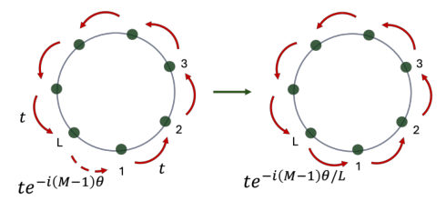
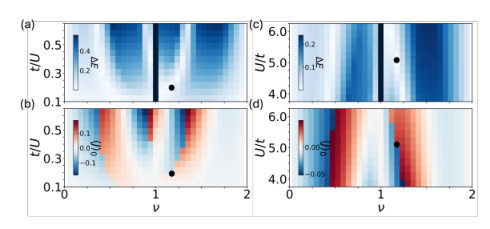
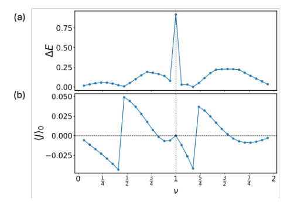

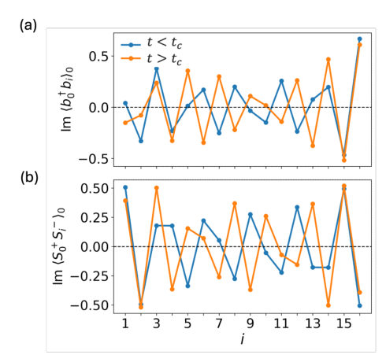
← Index · ← Previous · Next →
Authors: Oskar Novak, Christos N. Gagatsos, Narayanan Rengaswamy
Type: theory · Category: quantum information and computing · PDF: https://arxiv.org/pdf/2605.04203v1
Analysis basis: full PDF text, analyzed in chunks
Topic relevance: methods for driven-dissipative 3/5 · quantum measurements 3/5 · Keldysh / 2PI / non-Gaussian methods 2/5 · correlated / nonlocal dissipation 2/5 · entanglement & information structure 2/5 · non-equilibrium dynamics 1/5
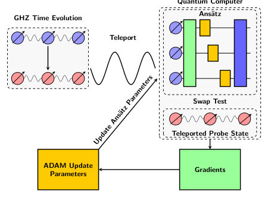
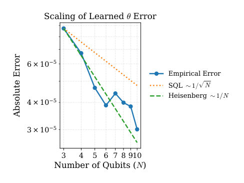
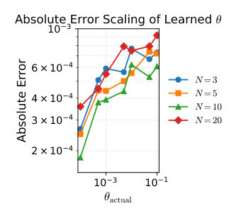
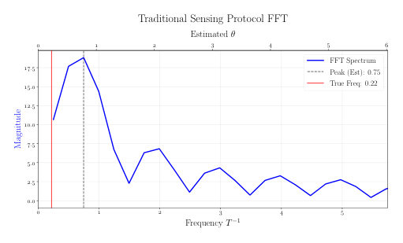
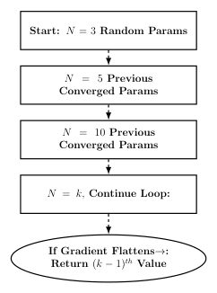
Summary. The paper presents VISTA, a new variational protocol for quantum sensing that uses a 'quantum twin' circuit to mimic noisy system dynamics. By using physics-informed optimization and a new quasi-normalization technique, it overcomes barren plateaus and achieves near-Heisenberg scaling even in the presence of environmental noise. This approach allows for the simultaneous and efficient extraction of both signal and noise parameters.
Why it may be interesting. It provides a practical, resource-efficient framework for near-term quantum sensors by combining passive evolution with variational optimization, specifically addressing the challenge of parameter estimation in open quantum systems.
Main problem. Improving the precision of quantum parameter estimation (metrology) in the presence of environmental noise, which typically degrades scaling from the Heisenberg Limit to the Standard Quantum Limit.
Main result. The introduction of the VISTA protocol, which achieves near-Heisenberg scaling for moderate noise and enables simultaneous estimation of signal and noise parameters using a physics-informed variational approach.
Method. A closed-loop variational protocol (VISTA) using a 'quantum twin' ansatz and a Swap Test to compare a passively evolving probe to a parameterized circuit, enhanced by a 'Quasi-Normalization' technique to sharpen gradients.
Model / system. An N-qubit GHZ state evolving under a Lindbladian master equation involving dephasing and amplitude damping channels, with a Hamiltonian proportional to the signal parameter theta.
Key observables. Hilbert-Schmidt inner product, Quantum Fisher Information (QFI), parameter error (delta theta), and purity.
Important parameters / regimes. Signal parameter (theta), noise rate (gamma), number of qubits (N), and the Heisenberg vs. Standard Quantum Limits.
Assumptions / limitations. The achievement of near-Heisenberg scaling may not persist in the asymptotic N to infinity limit; assumes availability of high shot counts for gradient stability.
Figures summary. Fig 1: VISTA protocol diagram; Fig 2: Error scaling vs N; Fig 5: FFT spectrum for traditional protocol; Fig 6-7: Dephasing and Amplitude Damping ansätze; Fig 9-10: Impact of Quasi-Normalization on loss gradients and convergence; Fig 14: Vector metrology results.
Paper structure. Introduction of the metrology problem and limitations of existing methods; description of the VISTA framework and quantum twin ansatz; introduction of the Quasi-Normalization technique; demonstration of performance in dephasing and amplitude damping models; extension to multi-parameter vector metrology; mathematical derivation of QFI lower bounds in the appendix.
Quantum metrology holds the potential to enhance magnetic field sensing beyond current limits. However, in the presence of realistic noise, this advantage degrades to the Standard Quantum Limit. While recent algorithmic and variational techniques attempt to recover this scaling, they are hindered by stringent control requirements on the probe state that are infeasible in the near term, or by barren plateaus and interpretability issues inherent to black-box variational quantum circuits. Here, we introduce Variational Inference and Sensing with Twin Ansätze (VISTA), a closed-loop protocol that combines passive sensing, or where the probe state is left to evolve without any active control, with physics-informed variational optimization. In the VISTA framework, a probe state evolves under a Lindbladian master-equation, and is compared, via the Swap test, to a parameterized ``quantum twin", a shallow quantum circuit designed to mimic the underlying pure-state or Lindbladian master-equation dynamics. By restricting the optimization space to the physical parameters of interest, VISTA circumvents barren plateaus. We demonstrate that by coupling the protocol with a classical optimizer and high shot counts, VISTA can temporarily achieve near-Heisenberg scaling for moderately noisy qubits over a finite range of system sizes. Furthermore, we introduce a Quasi-Normalization technique that sharpens the loss gradients, enabling simultaneous extraction of both the coherent signal $θ$ and the environmental noise rate $γ$ with low absolute error. Finally, we extend VISTA to the multi-parameter vector metrology regime, enabling simultaneous parameter extraction from a transverse-magnetic-field Hamiltonian. By eliminating the need for complex, open-loop control and processing, VISTA offers a highly practical, resource-efficient framework for near- to intermediate-term quantum sensors.
Authors: Masahito Hayashi
Type: theory · Category: quantum information and computing · PDF: https://arxiv.org/pdf/2605.04571v1
Analysis basis: full PDF text, analyzed in chunks
Topic relevance: quantum measurements 3/5 · correlated / nonlocal dissipation 2/5 · entanglement & information structure 2/5 · methods for driven-dissipative 2/5
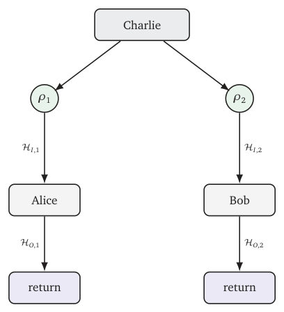
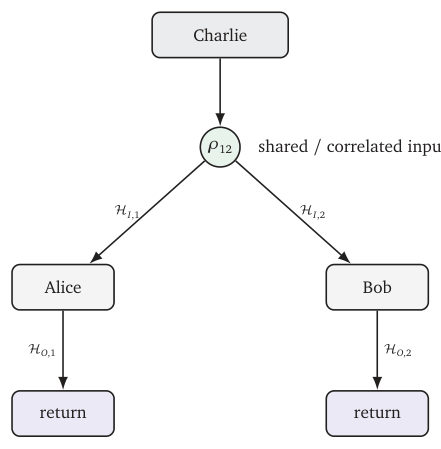
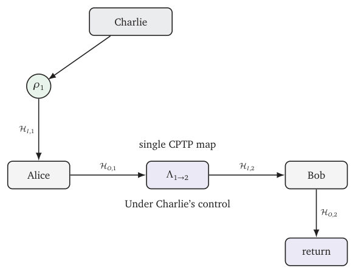
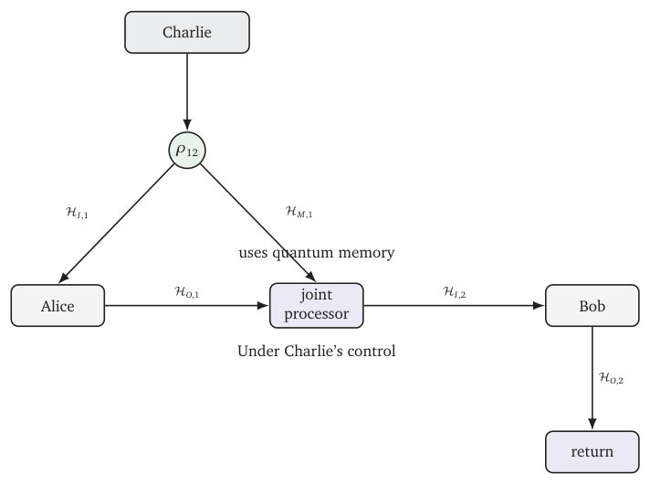
Summary. The paper provides a complete set of criteria to identify whether a quantum process is memoryless and sequential when only partial measurement data is available. It introduces a new algebraic consistency requirement that is essential to distinguish true sequential dynamics from processes with hidden memory. The findings are demonstrated through a tractable two-qubit Pauli model.
Why it may be interesting. This work is highly relevant to researchers in open quantum systems and quantum networks, as it provides fundamental limits on how much causal structure can be inferred from incomplete experimental data.
Main problem. Determining the causal order and memory properties of quantum processes when available measurement statistics are not tomographically complete.
Main result. The author establishes that a distribution is compatible with a memoryless sequential process if and only if it satisfies directional Markovianity, positivity of the reconstructed Choi matrix, and a new algebraic consistency condition (C1).
Method. The paper uses the process-matrix framework, pseudo-density matrix (PDM) formalism, and distribution-level analysis to identify set-membership for different strategy classes.
Model / system. A sequential quantum process involving two players (Alice and Bob) interacting via an unobserved environment, specifically analyzed within a two-qubit Pauli setting.
Key observables. Local measurement statistics, joint input-output probability distributions, and temporal correlations.
Important parameters / regimes. Two-qubit Pauli regime, restricted projective measurements, and the dimension of the quotient space of the process matrix.
Assumptions / limitations. The analysis assumes restricted projective measurements and a non-tomographic regime where the underlying process cannot be reconstructed exactly.
Figures summary. Not specified.
Paper structure. The paper introduces the problem of causal identification under restricted data, develops a mathematical framework using PDMs and Markovian chains, proposes a new algebraic consistency condition (C1), applies the theory to the two-qubit Pauli setting to prove the necessity of C1, and concludes with a discussion on the impossibility of full process tomography in this regime.
Identifying causal order from restricted projective data is generally nontrivial. When two quantum players interact only through an unobserved environment, the available local measurement statistics are typically not tomographically complete, so the underlying process cannot in general be reconstructed exactly from the observed distribution. As a result, causal direction can be statistically identifiable in some cases but fundamentally indistinguishable in others. In this work, we determine necessary and sufficient conditions for deciding when an observed distribution is compatible with a memoryless sequential quantum process in a fixed direction. We show that directional conditional-independence structure and the positivity criterion based on the pseudo-density matrix, as developed in recent work by Liu, Qiu, Dahlsten, and Vedral, are not sufficient by themselves. The missing ingredient is an additional algebraic consistency requirement, and together these conditions yield a complete criterion for membership in the memoryless sequential class. We then specialize to the two-qubit Pauli setting, where the problem remains non-tomographic but becomes explicitly tractable. In this regime, we characterize when the two sequential directions are statistically indistinguishable, and we show by example that positivity alone does not exclude more general memoryful strategies, whereas the additional algebraic consistency requirement does.
Authors: Madeline Berezowski, Artur Sowa, Jonas Fransson
Type: theory · Category: quantum information and computing · PDF: https://arxiv.org/pdf/2605.04598v1
Analysis basis: full PDF text, analyzed in chunks
Topic relevance: analog quantum simulation 3/5 · entanglement & information structure 3/5 · non-equilibrium dynamics 3/5
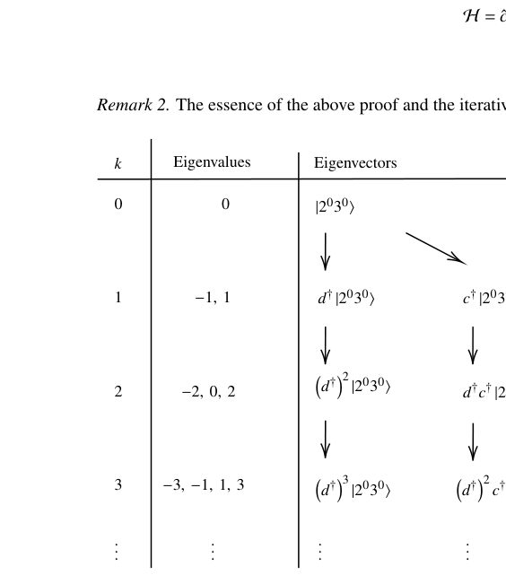
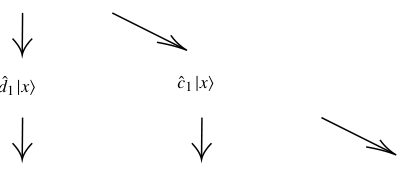
Summary. This paper provides an exact analytical solution for the eigenvalues and eigenvectors of the hopping term in a two-site Bose-Hubbard model. It shows that the square of this hopping Hamiltonian can periodically transform coherent states into Schrödinger cat states. Additionally, it uncovers a new method for computing the properties of the spin x-projection operator.
Why it may be interesting. It provides an analytical framework for generating non-classical, macroscopically distinguishable superpositions (cat states) using a simple two-site model, which is highly relevant to quantum state engineering and many-body dynamics.
Main problem. The paper aims to characterize the eigenvalues and eigenvectors of the hopping term in a two-site Bose-Hubbard model and study the generation of Schrödinger cat states.
Main result. The authors demonstrate that the square of the dimer hopping Hamiltonian induces periodic evolution of coherent states into macroscopically distinguishable Schrödinger cat states and provide a new method for diagonalizing the spin x-projection operator.
Method. An inductive argument using bosonic canonical commutation relations is used to derive eigenvalues and eigenvectors, alongside an analysis of the dynamical evolution under the H^2 operator.
Model / system. A Bose-Hubbard dimer consisting of two lattice sites containing k spinless bosons, where the Hamiltonian focus is on the hopping term.
Key observables. Energy eigenvalues, probability distribution of energy measurements, and the formation of Schrödinger cat states.
Important parameters / regimes. Number of particles (k), hopping amplitude (t), on-site interaction strength (U), and chemical potential (mu).
Assumptions / limitations. The derivation assumes the validity of Bose-Hubbard-type commutation relations for transformed operators and focuses specifically on the dynamics induced by the square of the Hamiltonian.
Figures summary. Figure 1 illustrates the relationship between the number of particles k and the resulting system properties.
Paper structure. The paper introduces the dimer model, presents an inductive proof for the eigenvalues and eigenvectors of the hopping Hamiltonian, establishes the equivalence to the spin x-projection operator, and concludes with the dynamical analysis of coherent state evolution into cat states.
The Bose-Hubbard Hamiltonian can be simplified to have only two lattice sites, in which case the system being described is referred to as a dimer. Due to its structure, the hopping term of the dimer Hamiltonian enjoys invariance in a family of subspaces indexed by a whole number $k$, each subspace corresponding to a system of only $k$ particles. We have invented an inductive argument using the bosonic canonical commutation relations to find the eigenvalues and eigenvectors of the dimer hopping Hamiltonian in its $k$-particle subspaces. In particular, this Hamiltonian, when restricted to one of the $k$-particle subspaces, is exactly the spin projection operator along the $x$-axis, where the number of particles $k$ in the dimer system yields the projection matrix for spin quantum number $s=k/2$. Thus, a new method for computing the eigenvalues and eigenvectors of the $x$-axis spin projector has been unearthed. We use the explicit construction to study the dynamics of coherent states induced by the square of the dimer hopping hamiltonian. We find that it generates Schrödinger cat states in the two-site setting.
Authors: Theodore McKeever, Harry J. D. Miller, Ahsan Nazir
Type: theory · Category: statistical mechanics · PDF: https://arxiv.org/pdf/2605.04681v1
Analysis basis: full PDF text, analyzed in chunks
Topic relevance: methods for driven-dissipative 3/5 · non-equilibrium dynamics 3/5 · Keldysh / 2PI / non-Gaussian methods 2/5
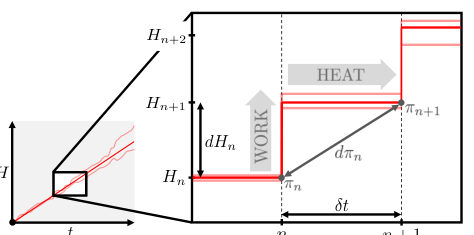
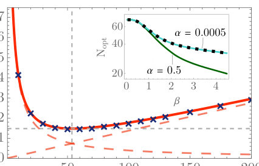
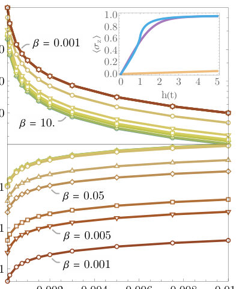
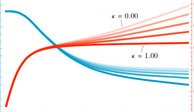
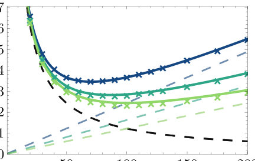
Summary. The paper demonstrates that classical noise in quantum control protocols prevents the use of infinitely slow processes by introducing new dissipative costs. It identifies a finite optimal number of control steps that balances deterministic and stochastic dissipation, providing a new guideline for energy-efficient quantum machine design.
Why it may be interesting. This is highly relevant for researchers in open quantum systems and many-body dynamics as it provides a practical limit on how 'slow' a quantum control protocol can be before noise-induced heating outweighs the benefits of quasi-static driving.
Main problem. Determining the optimal number of steps in a quantum step-equilibration protocol to minimize thermodynamic dissipation when the control fields are subject to classical stochastic noise.
Main result. The authors show that while deterministic dissipation decreases with more steps, stochastic noise causes dissipation to increase linearly with the number of steps, leading to a finite optimal number of steps (N_opt) and overturning the intuition that slower protocols are always more efficient.
Method. The study utilizes stochastic linear response theory, quantum thermodynamic geometry, and the Cumulant Generating Function (CGF) to derive bounds on dissipated work and work fluctuations.
Model / system. The framework is applied to a driven qubit with strong system-bath coupling (Landau-Zener model) and a 1D transverse-field Ising model (TFIM) undergoing a Landauer erasure protocol.
Key observables. Dissipated work (W_diss), work variance (sigma^2_W), thermodynamic length (L), and magnetization.
Important parameters / regimes. Number of steps (N), noise variance (Phi), inverse temperature (beta), and noise processes (Gaussian White Noise, Wiener, and Ornstein-Uhlenbeck).
Assumptions / limitations. Weak Gaussian noise approximation, linear response regime, and a timescale separation between control and thermalization.
Figures summary. Figure 1 illustrates the quench process; Figure 5 compares dissipation scaling across different noise models (GWN, AR(1), Wiener); Figure 9 shows temperature dependence of optimal work and dissipation rates.
Paper structure. The paper introduces the problem of stochastic control, develops a geometric framework for dissipation and fluctuations, applies the theory to specific noise models, and validates results using qubit and TFIM models.
Motivated by the need for precise, energy-efficient, and experimentally realistic quantum control protocols, we investigate the thermodynamic cost of performing quantum step-equilibration processes under the influence of classical stochastic control fields. Whereas purely deterministic protocols exhibit dissipation that scales inversely with the number of steps, we show that weak Gaussian noise in the control variables induces dissipative contributions that grow linearly with the number of steps. Consequently, we derive the finite optimal number of steps and minimal achievable average dissipated work and its variance using the quantum thermodynamic length. These results are demonstrated using two paradigmatic examples: a Landau-Zener sweep of a qubit strongly coupled to a thermal bath and the erasure of a transverse-field Ising model.
Authors: Yunjia Zhai, Anselmo M. Marques, Ricardo G. Dias, Verònica Ahufinger, David Viedma
Type: both · Category: other · PDF: https://arxiv.org/pdf/2605.05002v1
Analysis basis: full PDF text, analyzed in chunks
Topic relevance: analog quantum simulation 3/5 · interference shaping light 3/5 · exotic spin models in light-matter 2/5
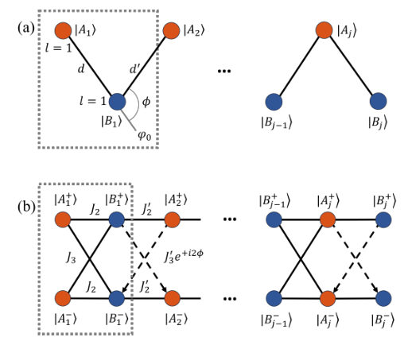
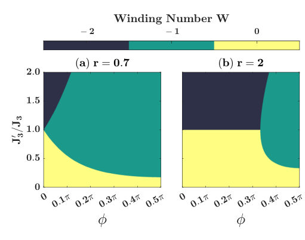
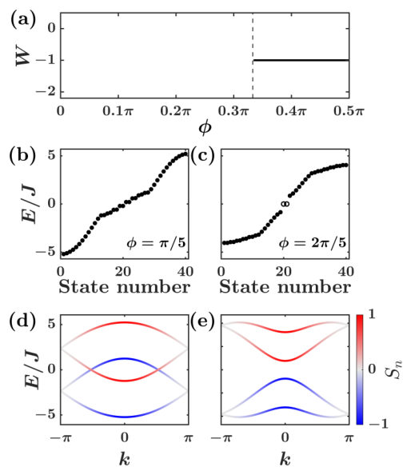
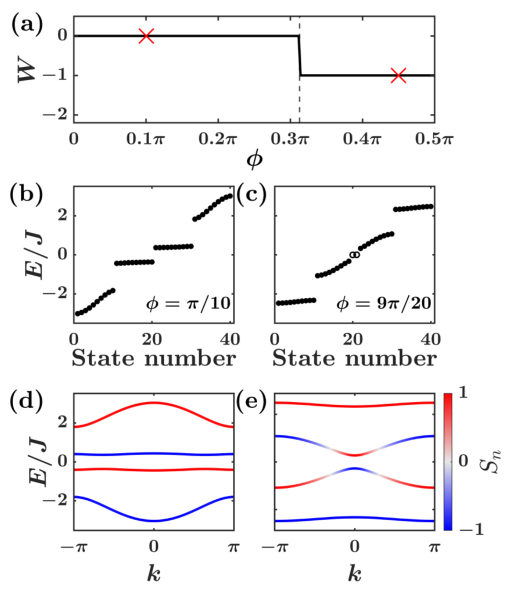
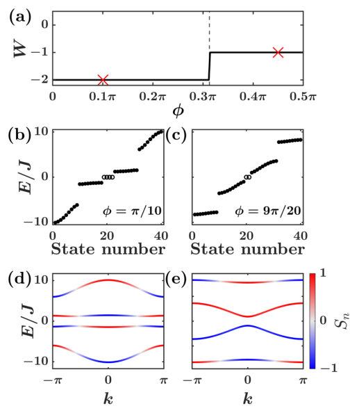
Summary. This paper explores how the geometry of a 1D lattice, specifically the angle between sites, can be used to control topological phases in systems with orbital angular momentum. By mapping the system to a Creutz ladder, the authors show that tuning the angle induces transitions between different winding numbers. They propose and simulate a photonic waveguide implementation where these transitions are visible through changes in light localization.
Why it may be interesting. It demonstrates a novel way to achieve geometric control over topological phases using OAM, which is highly relevant for designing robust topological photonic circuits and synthetic dimension engineering in quantum optics.
Main problem. Investigating how the topological properties of a 1D staggered lattice can be geometrically controlled by tuning the relative angle between lattice sites using orbital angular momentum (OAM) modes.
Main result. The study demonstrates that tuning the interleg angle can induce topological phase transitions between different winding number regimes (W=0, -1, -2) and that these transitions are accompanied by observable band inversion and changes in light localization.
Method. The authors use analytical derivation of the Bloch Hamiltonian and winding number, numerical exact diagonalization for energy spectra, and finite-element simulations (COMSOL) for a photonic waveguide implementation.
Model / system. A 1D staggered lattice loaded with OAM states (l=1) that can be mapped to a Creutz ladder model in a synthetic dimension, with a proposed experimental implementation in a zig-zag array of coupled cylindrical optical waveguides.
Key observables. Winding number (W), number of topologically protected edge states, band inversion signature (sublattice-exchange operator expectation value), and light propagation/localization behavior.
Important parameters / regimes. Relative angle (phi), hopping strengths (J2, J2', J3, J3'), and the ratio of coupling strengths.
Assumptions / limitations. The study focuses on the regime phi in (0, pi/2) and assumes the winding number is well-defined (i.e., the bulk energy gap does not close).
Figures summary. Fig 1 shows the lattice and Creutz ladder mapping; Fig 2 presents phase diagrams of the winding number; Fig 3 and 6 show energy spectra and edge state emergence; Fig 7 and 8 demonstrate band structures for different lattice geometries; Fig 9 simulates electric field propagation in a waveguide with a varying angle.
Paper structure. The paper introduces the physical model and its mapping to a Creutz ladder, provides analytical and numerical derivations of topological invariants and phase transitions, proposes a photonic waveguide implementation, and validates the theory with light propagation simulations.
We study how the topological properties of a one-dimensional staggered lattice, loaded into states with orbital angular momentum $l=1$, can be controlled simply by tuning the relative angle between sites. The original system under consideration can be depicted as a Creutz ladder model when unwrapping the different state circulations in a synthetic dimension. Depending on the hopping strengths of the chain, different topological regimes may be accessed by changing the ladder angle, as determined by the value of the winding number of the chain. We analytically and numerically explore the different available regimes, and determine the number of topologically protected edge states that exist in each case. We also study the emergence of band inversion across topological transitions and show that it agrees with the winding number calculations, thus serving as an additional topological marker. Then, we propose a realistic experimental implementation in a photonic waveguide system, where the topological transition manifests as a sudden change of the behavior of the propagation of light in the system.
Authors: Daniela Moretti, Pasquale Digregorio, Giuseppe Gonnella, Antonio Suma
Type: both · Category: statistical mechanics · PDF: https://arxiv.org/pdf/2605.04812v1
Analysis basis: full PDF text, analyzed in chunks
Topic relevance: non-equilibrium dynamics 3/5 · non-equilibrium universality 3/5 · driven-dissipative phase transition 2/5
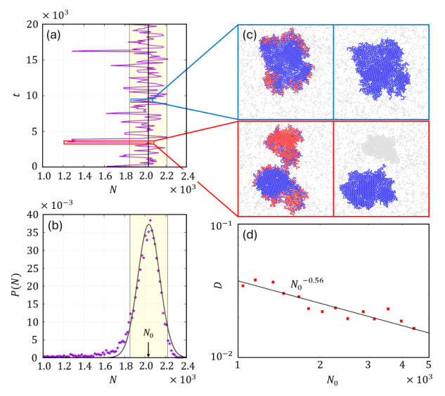
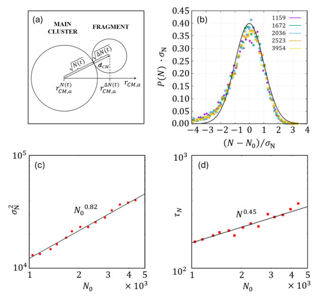
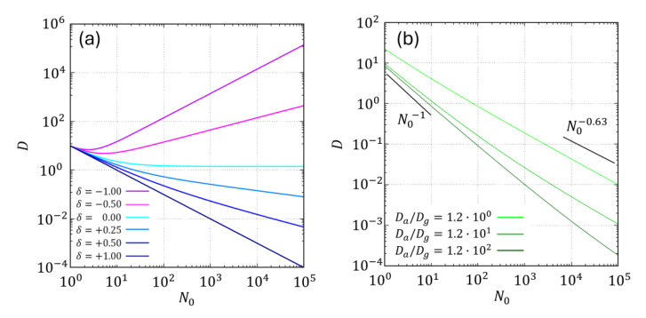
Summary. This paper provides a theoretical explanation for the anomalous diffusion of active particle clusters by accounting for the stochastic fluctuations in cluster mass due to particle attachment and detachment. It demonstrates that these mass fluctuations create a new diffusion contribution that dominates at large cluster sizes, leading to the observed non-standard scaling.
Why it may be interesting. not directly relevant
Main problem. Explaining the origin of anomalous diffusion in the center-of-mass of clusters of Active Brownian Particles (ABPs), specifically why the diffusion coefficient scales as D ~ N^(-1/2) instead of the conventional N^(-1).
Main result. The authors derive a theoretical framework showing that the diffusion coefficient is the sum of a conventional term and a fluctuation-driven term arising from mass exchange, predicting an anomalous scaling exponent alpha = 0.63 +/- 0.06 that matches simulations.
Method. The study combines an analytical derivation using coupled stochastic Langevin equations with large-scale numerical simulations of Active Brownian Particles.
Model / system. The system consists of clusters of Active Brownian Particles (ABPs) undergoing Motility-induced Phase Separation (MIPS), modeled using Active Ornstein-Uhlenbeck Particles (AOUPs) to account for mass exchange (attachment/detachment) with the surrounding phase.
Key observables. Center-of-mass diffusion coefficient (D), Mean-Square Displacement (MSD), cluster mass evolution N(t), and scaling exponents (alpha, beta, kappa, delta).
Important parameters / regimes. Mean cluster size (N0), mass fluctuation variance scaling (beta), mass fluctuation persistence time (kappa), and spatial dimension (d).
Assumptions / limitations. The mass evolution N(t) follows a Gaussian process; clusters are assumed to be roughly spherical; mass fluctuations are small relative to the total mass (|delta N| < N).
Figures summary. Figure 1 shows cluster dynamics and mass exchange snapshots; Figure 2 illustrates the schematic of fragment attachment/detachment and fits for the diffusion exponents; Figure 3 shows the diffusion coefficient scaling with cluster size in 2D.
Paper structure. The paper introduces the problem of anomalous diffusion, presents a theoretical framework based on coupled stochastic equations for COM and mass, validates the model against ABP simulations, and discusses the scaling regimes and dimensionality effects.
Motivated by the anomalous diffusion observed in clusters of active Brownian particles (ABPs), where the center-of-mass diffusion coefficient scales as $D\sim N^{-1/2}$ with respect to the number $N$ of particles in the cluster, we derive a minimal theoretical framework starting from the single-particle Langevin equations. The model consists of two coupled stochastic equations: one for the cluster center-of-mass trajectory and one for the mass evolution $N(t)$, explicitly accounting for stochastic displacements induced by particle attachment and detachment. We specialize and validate the framework against ABP simulations of isolated clusters in stationary conditions, where $N(t)$ follows a Gaussian process with mean $N_0$, variance $\propto N_0^β$, and persistence time $\propto N_0^κ$. Analytical solution of the coupled equations yields the long-time diffusion coefficient as the sum of two contributions: a conventional term $\propto N_0^{-1}$) due to thermal noise plus summation of active forces, and a fluctuation-driven term $\propto N_0^{-δ}$ with $δ=2-2/d-β+κ$, where $d$ is the spatial dimension. We demonstrate that anomalous scaling emerges whenever the second term becomes dominant. The model predicts $D\sim N^{-α}$ with $α=0.63\pm0.06$, in good quantitative agreement with large-scale ABP simulations.
Authors: Priyanshi Bhasin, Diptiman Sen, Tanmoy Das
Type: theory · Category: strongly correlated electrons · PDF: https://arxiv.org/pdf/2605.04538v1
Analysis basis: full PDF text, analyzed in chunks
Topic relevance: analog quantum simulation 3/5 · exotic spin models in light-matter 3/5 · entanglement & information structure 2/5




Summary. This paper presents a new second-quantized algebraic framework for 1D Abelian anyons that correctly accounts for both finite on-site occupancy and non-local exchange phases. It demonstrates an exact duality between pi/3 anyons and spin-1 operators, allowing anyonic models to be mapped to spin-1 XY-like models. This provides a new method for realizing anyonic statistics in physical systems like spin chains.
Why it may be interesting. The establishment of a duality between anyonic statistics and spin-1 operators offers a concrete theoretical pathway to engineer anyonic physics using well-understood spin-1 lattice models and synthetic gauge fields.
Main problem. Developing a consistent second-quantized formulation for Abelian anyons that simultaneously enforces local exclusion rules (finite on-site occupancy) and non-local exchange/braiding phases.
Main result. The authors establish a new algebraic framework for 1D anyons and an exact Jordan-Wigner duality between pi/3 anyons and spin-1 operators, providing a route to realize anyons via spin Hamiltonians.
Method. The study uses deformed commutation relations, a modified Jordan-Wigner transformation, and Exact Diagonalization (ED) via the QuSpin package to analyze the resulting spin-1 models.
Model / system. A 1D lattice of Abelian anyons with statistical phase theta = pi/N, featuring a tight-binding Hamiltonian with density-dependent phases and an on-site Hubbard-like interaction.
Key observables. Ground-state energy, total momentum, persistent current, energy gap, ground-state fidelity, and two-point correlation functions.
Important parameters / regimes. Statistical angle theta, anyon density (filling fraction) nu, hopping amplitude t, Hubbard interaction U, and site occupancy limit N-1.
Assumptions / limitations. The algebraic construction and many-body states are restricted to 1D chains; the study focuses on Abelian anyons.
Figures summary. Figure 1 shows a schematic of anyon chains with periodic boundary conditions; Figure 6 and 7 illustrate anyon exchange processes and phase accumulation; Figure 8 plots the energy gap and persistent current as functions of anyon density for even and odd system sizes.
Paper structure. The paper introduces a new algebraic framework for anyon second quantization, establishes a spin-anyon duality for the pi/3 case, performs numerical analysis of the resulting models using ED, and provides consistency checks via various exchange processes.
Anyons exhibit a non-trivial interplay between local exclusion rules and non-local braiding and exchange phases, making a consistent commutation algebra and second-quantized formulation challenging. We develop an algebraic framework for Abelian anyons in one dimension with statistical phase $θ$ = $π$/N that enforces a finite on-site occupancy of N-1 anyons with the exchange phase $θ$ between different sites. Moreover, we introduce an exact Jordan-Wigner duality between $π$/3 anyons and spin-1 operators, allowing us to map a tight-binding anyon model to an XY-like spin-1 model. The model exhibits anyon-density-dependent flux, incompressible or gapless regions, and critical points with level crossings that appear as discontinuities in ground-state currents, momenta, fidelities, and correlation functions. Our second-quantization formalism establishes a novel spin anyon duality, offering a conceptually new route to realize anyons from spin Hamiltonians and to engineer corresponding device architectures.
Authors: AbdAlGhaffar Amer, V. Walther, Francis Robicheaux
Type: theory · Category: other · PDF: https://arxiv.org/pdf/2605.05171v1
Analysis basis: full PDF text, analyzed in chunks
Topic relevance: Keldysh / 2PI / non-Gaussian methods 3/5 · methods for driven-dissipative 2/5 · non-equilibrium dynamics 2/5
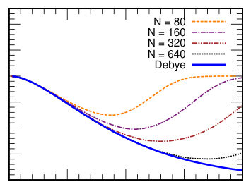
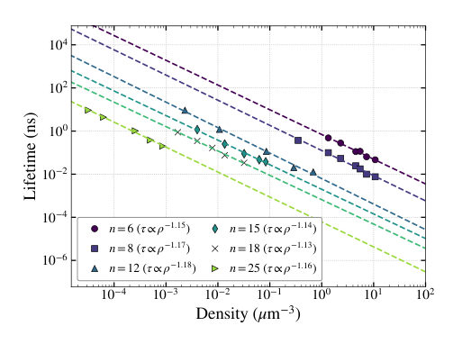
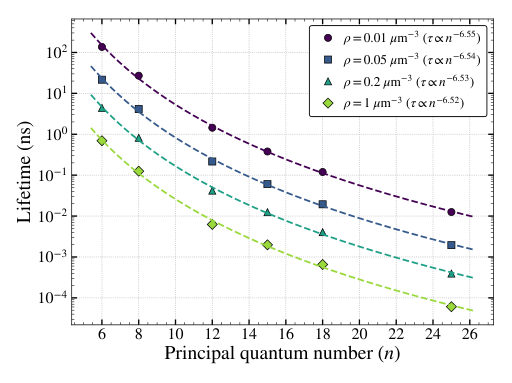
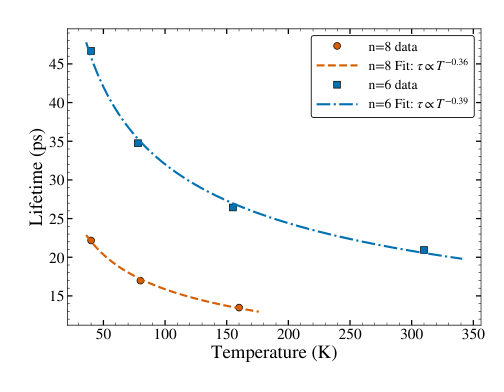
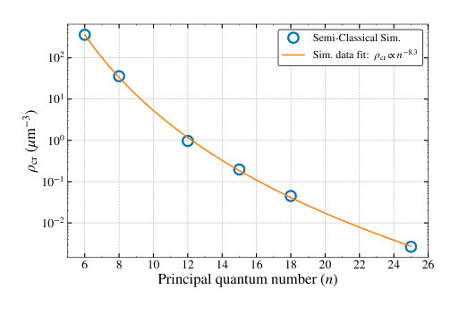
Summary. This paper explores how a background plasma influences the stability and screening of Rydberg excitons in Cu2O. It demonstrates that because excitons move faster than the plasma can respond, standard Debye screening models fail to accurately describe the system. The findings provide a potential explanation for observed deviations in exciton lifetime scaling at high quantum numbers.
Why it may be interesting. It addresses the breakdown of the adiabatic (Debye) approximation in systems where internal particle dynamics are faster than the environment's response, which is highly relevant to open quantum systems and many-body dynamics.
Main problem. Investigating how a neutral electron-hole plasma affects the lifetimes and screening of Rydberg excitons in cuprous oxide (Cu2O), specifically testing the validity of the Debye screening model.
Main result. The study finds that plasma-induced scattering causes exciton lifetimes to scale with density, temperature, and principal quantum number, and that Debye screening overestimates the screening of the exciton's internal field due to high orbital frequencies.
Method. The authors use a combination of a classical orbit model and a semiclassical approach using the Truncated Wigner Approximation (TWA) to evolve the exciton state.
Model / system. A neutral electron-hole plasma interacting with Rydberg excitons in cuprous oxide (Cu2O), where excitons are modeled as classical Keplerian orbits or quantum harmonic oscillators.
Key observables. Exciton lifetime (tau), Debye screening length, electric field ratio (simulated vs. unscreened), and plasma-induced scattering rates.
Important parameters / regimes. Principal quantum number (n), plasma density (rho), temperature (T), and the adiabaticity ratio (omega_Ryd/omega_p).
Assumptions / limitations. The plasma is treated as a weakly correlated classical system (Gamma <= 0.2), and quantum correlations between electrons and holes are neglected.
Figures summary. Figure 1 validates the plasma model via Debye screening; Figure 2 shows exciton lifetime scaling with density; Figure 6 shows normalized lifetime vs. frequency ratio; Figure 8 presents a rho-T phase diagram of exciton observability and screening limits.
Paper structure. The paper begins by validating the plasma simulation against known Debye screening, moves to modeling exciton dynamics via classical and semiclassical methods, analyzes lifetime scaling and spectral loss mechanisms, and concludes with an analysis of screening efficiency and a phase diagram of exciton stability.
We simulate the effects of a neutral electron--hole plasma on Rydberg excitons in cuprous oxide (Cu$_2$O), focusing on the validity of Debye screening and the role of plasma-induced thermalization. Unlike atomic Rydberg states, excitons in Cu$_2$O consist of quasiparticles with comparable effective masses whose orbital frequencies can exceed the plasma frequency, invalidating the assumption of a stationary screened charge. Using two complementary approaches, a classical orbit model and a harmonic-oscillator representation evolved via the truncated Wigner approximation, we study exciton lifetimes and interaction screening under realistic plasma conditions. We find numerically that plasma-induced scattering induces finite exciton lifetimes with specific scaling relations with plasma density, principal quantum number $n$ and temperature, possibly providing an explanation for experimentally observed deviations from the $n^3$ scaling at high principal quantum numbers. By explicitly computing time-averaged electric fields, we show that Debye screening overestimates the screening of the exciton's internal field, especially for high angular momentum states. Furthermore, we demonstrate that exciton-exciton interactions are not Debye screened at separations comparable to the Debye length for Rydberg excitons that are well resolvable in absorption measurements.
Authors: Srinivasan S. Iyengar, Amr Sabry
Type: theory · Category: quantum information and computing · PDF: https://arxiv.org/pdf/2605.04343v1
Analysis basis: full PDF text, analyzed in chunks
Topic relevance: analog quantum simulation 3/5 · entanglement & information structure 2/5 · interference shaping light 1/5
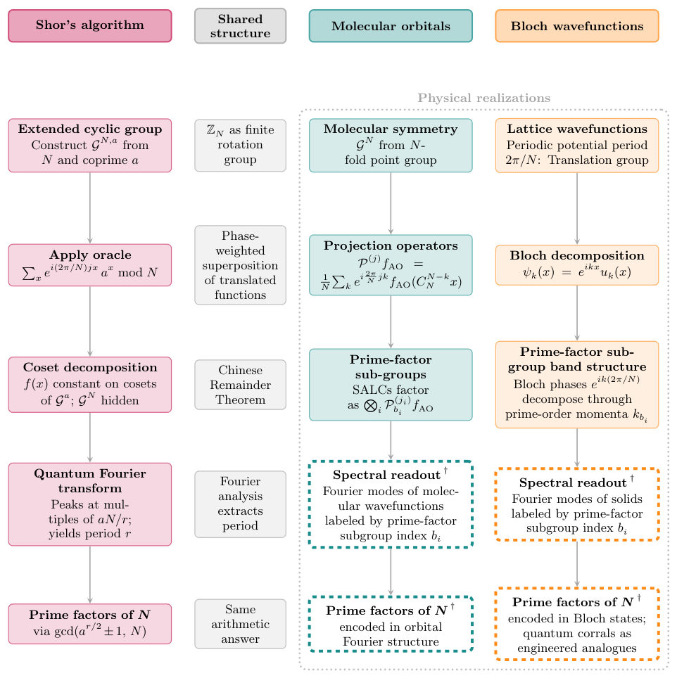
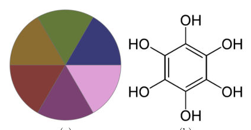
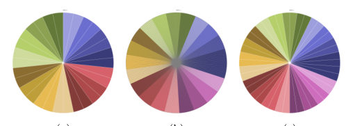
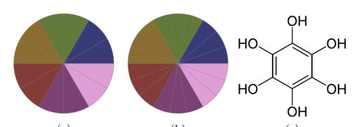
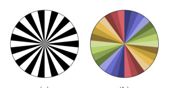
Summary. This paper demonstrates that the mathematical structure of Shor's algorithm can be mapped onto the physical symmetries of molecules and periodic lattices. By showing that prime factors are encoded in the Fourier modes of these systems, it suggests that engineered matter could potentially be used to solve hard mathematical problems.
Why it may be interesting. It proposes a novel bridge between abstract quantum algorithms and tangible physical symmetries in matter, suggesting that synthetic molecular or lattice engineering could serve as a platform for physicalized quantum computation.
Main problem. Investigating whether the group-theoretic structure of Shor's algorithm and the Hidden Subgroup Problem (HSP) can be physically realized using the symmetries of molecular and condensed-phase systems.
Main result. The authors establish a formal mathematical mapping between the modular arithmetic used in Shor's algorithm and the periodic symmetries found in molecular orbitals and Bloch wavefunctions, suggesting that physical systems could potentially encode prime-factor information.
Method. The study uses group theory, specifically representation theory, the Chinese Remainder Theorem, and projection operators, to relate cyclic group rotations to symmetry-adapted linear combinations (SALCs) and Bloch's theorem.
Model / system. The models include molecular systems (e.g., hexahydroxybenzene, polyenes), condensed-phase assemblies (periodic lattices, quantum corrals), and optical beams with specific angular momenta, all modeled via rotation groups and periodic potentials.
Key observables. The Fourier structure of molecular orbitals, Bloch phases, and the period 'r' of the modular exponentiation function.
Important parameters / regimes. The integer N to be factored, its prime factors b_i, and the subdivision factor 'a' used to define the extended group G_{N,a}.
Assumptions / limitations. The experimental realization of these engineered systems remains an open question; the model assumes electrons in polyene systems exist in a periodic 1D potential extending to the required residues.
Figures summary. Figures illustrate quantum circuit templates, the step-by-step correspondence between Shor's algorithm and physical symmetries, visual representations of group rotations and molecular structures (like hexahydroxybenzene), and the division of groups into cosets.
Paper structure. The paper begins by defining modular arithmetic as a rotation group, develops the representation theory for these groups, formulates the HSP, and then establishes the structural correspondence to molecular orbitals and Bloch wavefunctions.
We describe a group theoretic analysis of Shor's algorithm and other related hidden subgroup problems in mathematics and relate these to symmetries of molecular and condensed phase assemblies. By recasting Shor's algorithm through the lens of group theory, we expose the possibility that physical systems such as molecular orbitals, condensed phase assemblies and optical beams may be designed such that these contain information pertaining to the solution to hard mathematical problems such as prime-factoring. We discuss real molecular systems, whose orbitals are constructed from symmetry-adapted linear combinations of atomic orbitals, and show that these contain information pertaining to the prime-factors of corresponding integers. Due to the broad significance of prime-factoring towards a variety of encryption problems in cyber-security, we believe this novel and fundamental approach may have broad impact.
Authors: P. D. Taylor-Burdett, C. A. Burhan, S. Mason, F. R. Lebrun-Gallagher, S. Weidt, W. K. Hensinger
Type: both · Category: other · PDF: https://arxiv.org/pdf/2605.05158v1
Analysis basis: full PDF text, analyzed in chunks
Topic relevance: QC/QI experiment 3/5 · spintronics-quantum-optics interface 2/5
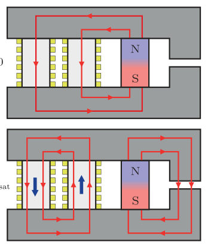
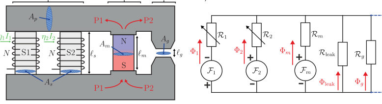
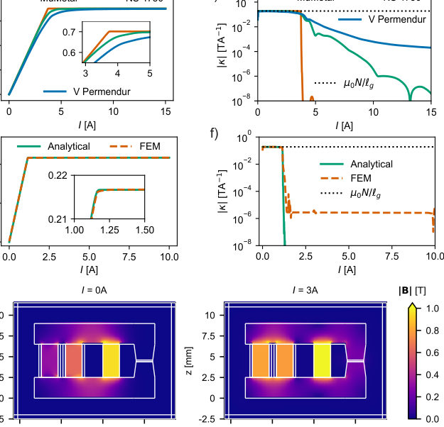
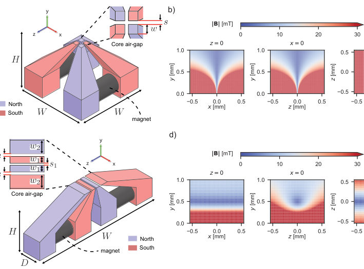
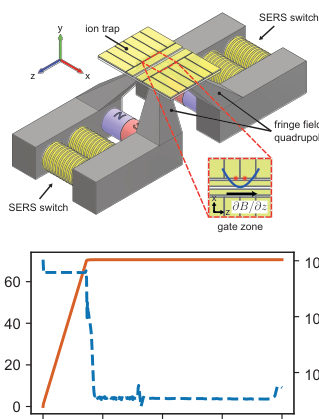
Summary. The paper introduces the Saturable Electronic Reluctance Switch (SERS), a device that uses non-linear ferromagnets to switch magnetic fields with extremely low noise and power consumption. By saturating a shunt path, the device can turn magnetic fields on and off while remaining insensitive to current fluctuations. This technology offers a scalable solution for generating stable magnetic field gradients in trapped-ion quantum computers.
Why it may be interesting. This is highly relevant for AMO physicists working on trapped-ion QCCD architectures, as it provides a way to implement high-gradient, low-noise magnetic control without the heating and noise penalties of traditional electromagnets.
Main problem. The difficulty of generating magnetic fields that are simultaneously ultra-stable (low noise) and switchable (on/off) for applications like trapped-ion quantum computing.
Main result. The development of a Saturable Electronic Reluctance Switch (SERS) that reduces magnetic field noise from current fluctuations by up to five orders of magnitude and reduces power dissipation by an order of magnitude compared to conventional wires.
Method. The study uses analytical magnetic circuit modeling (reluctance-based) and 3D non-linear Finite Element Method (FEM) simulations via COMSOL Multiphysics to evaluate different material alloys and geometries.
Model / system. A hybrid magnetic circuit (SERS) consisting of a primary ferromagnetic core, a source magnet, and a shunt section with anti-parallel solenoids designed to switch flux between a shunt path and an air-gap.
Key observables. Current sensitivity (kappa), switching ratio (alpha), magnetic field gradient (partial B/partial z), and power dissipation (Joule losses).
Important parameters / regimes. Saturation threshold current (Isat), permeability (mu), saturation flux density (Bsat), and the switching ratio (alpha).
Assumptions / limitations. The primary core is assumed to have negligible reluctance; leakage flux is represented by a lumped parallel reluctance; and copper resistivity is assumed constant at 300 K.
Figures summary. Figure 1 shows a cross-section of the SERS illustrating the OFF state; subsequent figures illustrate the SERS-driven quadrupole prototype and its integration with ion trap architectures.
Paper structure. The paper introduces the stability-switchability trade-off, describes the SERS physical mechanism and design conditions, presents numerical simulations of different materials and geometries, and concludes with a practical application for trapped-ion quantum computing.
Across many areas of science, there is a need to generate magnetic fields that are both ultra-stable and switchable on and off. While permanent and superconducting magnets offer exceptionally low-noise fields, they are not readily switchable. Conversely, electromagnets are switchable but are susceptible to current noise. We present a hybrid technique to switch the field of any arbitrary magnet through use of a non-linear ferromagnetic circuit, named the Saturable Electronic Reluctance Switch (SERS). The circuit achieves bi-stable switching of the field by applying a current above a given threshold, akin to a transistor for magnetic fields. Crucially, the applied current has minimal influence on the magnetic field output and demagnetisation of the magnet is avoided, drastically reducing power dissipation. SERS is also robust to fabrication errors, suppressing noise in the control current by several orders of magnitude in a non-ideal device. To illustrate its application, a SERS-driven device is proposed for generating ultra-stable magnetic field gradients in a scalable trapped-ion quantum computer. We find this device offers an order of magnitude reduction in power dissipation compared to state-of-the-art current carrying wires, while reducing magnetic field noise originating from current fluctuations by up to five orders of magnitude.
Authors: Miguel A. A. Lisboa
Type: theory · Category: quantum information and computing · PDF: https://arxiv.org/pdf/2605.04931v1
Analysis basis: full PDF text, analyzed in chunks
Topic relevance: entanglement & information structure 3/5 · quantum measurements 1/5
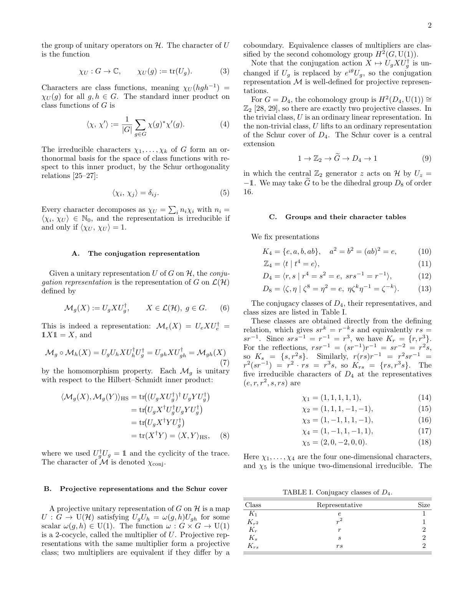
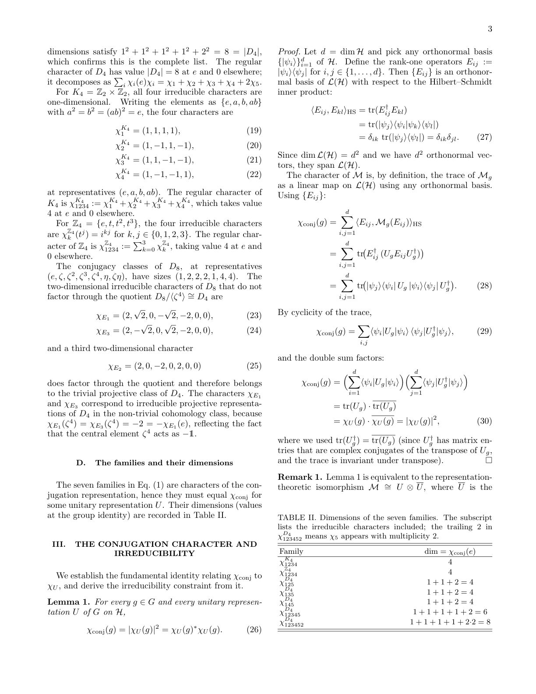
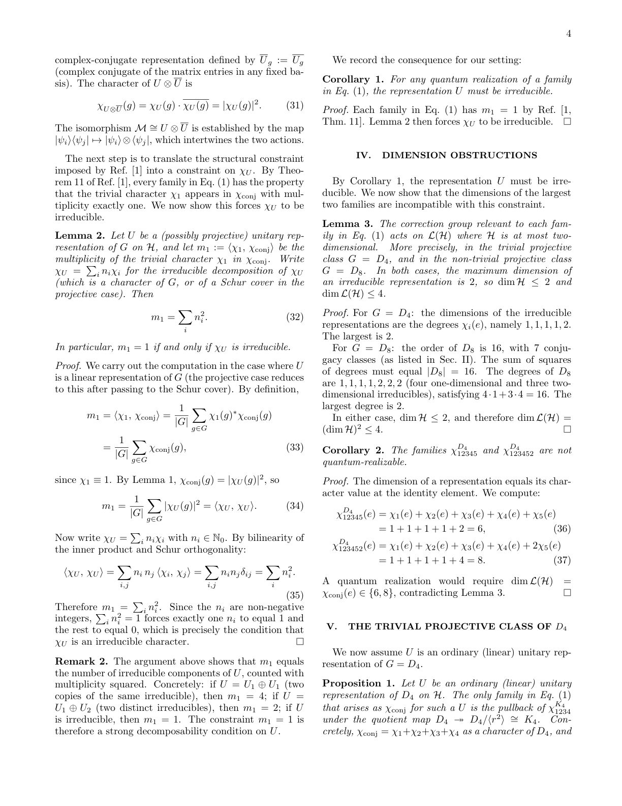
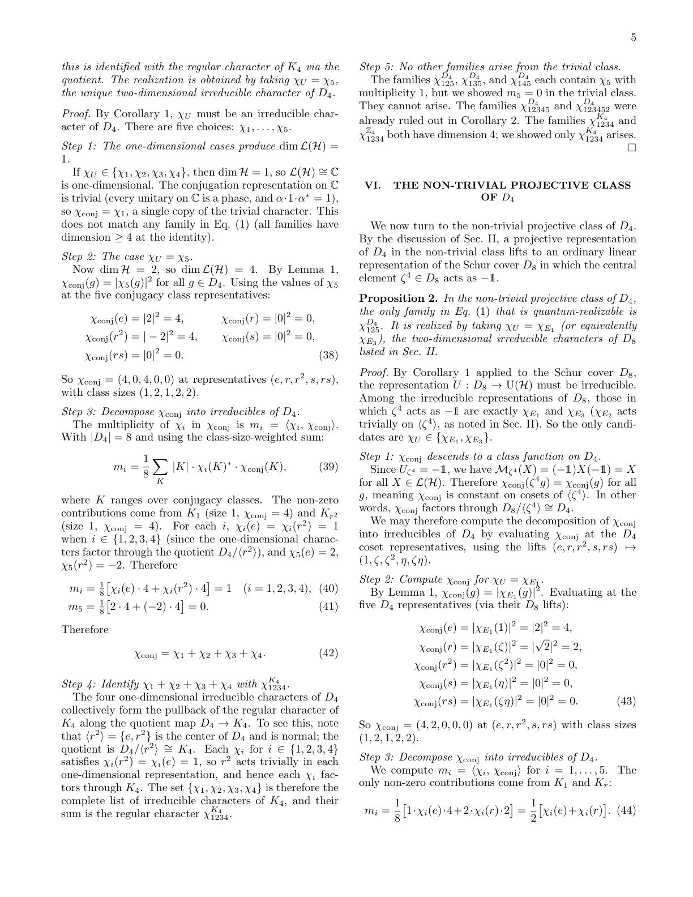
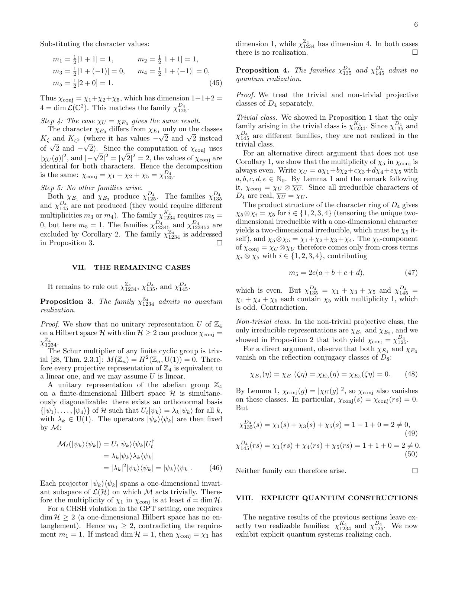
Summary. This paper resolves the question of which teleportation-stable General Probabilistic Theories are compatible with standard quantum mechanics. By using group representation theory, the author proves that only two out of seven previously identified families are quantum-realizable. The study provides explicit constructions for these two families using Bell-basis measurements and POVMs.
Why it may be interesting. This work provides fundamental constraints on the types of probabilistic theories that can exist as quantum-mechanical systems, which is relevant for understanding the boundaries of quantum information protocols like teleportation.
Main problem. The paper aims to determine which of the seven families of General Probabilistic Theories (GPTs) that are stable under teleportation and entanglement swapping can be physically realized within the framework of standard quantum mechanics.
Main result. The author proves that exactly two of the seven families are quantum-realizable (specifically χ^{K4}{1234} and χ^{D4}), while the remaining five families admit no quantum realization.
Method. The study employs elementary representation theory, character tables of finite groups (K4, Z4, and D4), and the analysis of projective representations via the Schur cover (D8) to check for compatibility with unitary representations.
Model / system. The mathematical framework involves General Probabilistic Theories (GPTs) and their operator spaces, specifically analyzing the action of correction groups (K4, Z4, D4) on the algebra of operators in finite-dimensional Hilbert spaces.
Key observables. CHSH value, conjugation character (χ_conj), and the multiplicity of irreducible representations.
Important parameters / regimes. Dimensions of the Hilbert space and the character components of the group representations.
Assumptions / limitations. The analysis assumes finite-dimensional Hilbert spaces and focuses on the effective GPT classification provided by previous work.
Figures summary. Table I details the conjugacy classes of the dihedral group D4, and Table II summarizes the dimensions and character compositions of the seven GPT families.
Paper structure. The paper begins by defining the problem of quantum realizability, uses representation theory to establish constraints on the multiplicity of characters, proves the impossibility of five families through dimension and multiplicity obstructions, and concludes by providing explicit quantum constructions for the two realizable families.
The classification of general probabilistic theories (GPTs) whose CHSH value is stable under arbitrary rounds of teleportation and entanglement swapping was recently obtained in Dmello and Gross work and consists of seven families, indexed by characters of the Klein four-group $K_4$, the cyclic group $\mathbb{Z}_4$, and the dihedral group $D_4$. The question of which of these families admits a realization within standard quantum mechanics was left open. In this work we resolve this question completely. Using elementary representation theory, we prove that exactly two families are quantum-realizable, namely $χ^{K_4}_{1234}$ and $χ^{D_4}_{125}$, while the remaining five admit no quantum realization.
Authors: Ray Ganardi
Type: theory · Category: quantum information and computing · PDF: https://arxiv.org/pdf/2605.04879v1
Analysis basis: full PDF text, analyzed in chunks
Topic relevance: entanglement & information structure 3/5
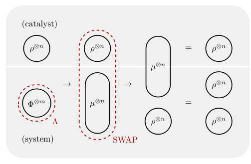
Summary. This paper demonstrates that using a catalyst can significantly reduce the amount of entanglement needed to prepare many copies of a mixed state exactly. It establishes that this catalytic advantage in the asymptotic regime is fundamentally linked to the non-convexity of the exact entanglement cost. The findings are shown to be generalizable to other resource theories, such as the thermodynamic cost of work.
Why it may be interesting. It provides fundamental insights into the irreversibility and resource manipulation limits in quantum information, specifically showing how auxiliary systems can fundamentally change the scaling of resource costs in the many-copy limit.
Main problem. The paper investigates whether catalysis (using an auxiliary state that is returned unchanged) can provide a significant advantage in reducing the exact entanglement cost in the asymptotic (many-copy) regime.
Main result. The author proves that catalysis can strictly lower the exact entanglement cost for mixed states in both PPT and LOCC frameworks, establishing that this advantage is a direct consequence of the non-convexity of the exact cost.
Method. The study uses the PPT entanglement theory as a proxy for LOCC, develops an explicit catalytic protocol using a SWAP operation, and employs mathematical tools like Jensen's Theorem and the properties of max-relative entropy.
Model / system. The work focuses on entanglement manipulation of mixed states, specifically Werner states and states with positive binegativity, using Bell pairs as the standard resource unit.
Key observables. Exact entanglement cost (E0c), catalytic exact entanglement cost (E0c,c), logarithmic negativity (LN), and exact work cost (W0c).
Important parameters / regimes. Asymptotic (many-copy) regime, single-copy regime, strict vs. correlated catalysis, and the distinction between exact and approximate cost regimes.
Assumptions / limitations. The advantage is analyzed in the 'exact' regime; the paper notes that the advantage may disappear in the 'approximate' regime where the cost function becomes convex.
Figures summary. Figure 1 illustrates a catalytic protocol involving a sequence where a system state is transformed via a map followed by a SWAP operation with a catalyst.
Paper structure. The paper introduces the problem of asymptotic catalysis, develops a mathematical framework using PPT and LOCC, provides an explicit protocol construction, proves the link between non-convexity and catalytic advantage, and generalizes the findings to other resource theories like thermodynamics.
Entanglement is a key quantum resource in various quantum protocols, with a rich set of laws governing its manipulation. In this context, catalysis refers to the possibility of an auxiliary state that enables a previously forbidden manipulation, while being completely returned at the end. While the catalytic setting has been thoroughly examined in the single-copy regime, much less is known in the asymptotically many copy regime. In this work, we focus on the entanglement cost of preparing asymptotically many copies of a given state exactly. We show that catalysis can significantly lower the exact entanglement cost by constructing an explicit catalytic protocol. Additionally, these findings generalize readily to other resource theories, showing a general catalytic advantage in the resource dilution task.
Authors: Ryosuke Kurihara, Atsuhiko Miyata, Koji Araki, Shusaku Imajo, Ruo Hibino, Atsushi Miyake, Sergei Zherlitsyn, Joachim Wosnitza, Hiroshi Yaguchi, Fumitoshi Iga, Masashi Tokunaga, Yasuhiro H. Matsuda
Type: experiment · Category: strongly correlated electrons · PDF: https://arxiv.org/pdf/2605.04350v1
Analysis basis: full PDF text, analyzed in chunks
Topic relevance: Kondo & dissipative impurity 3/5
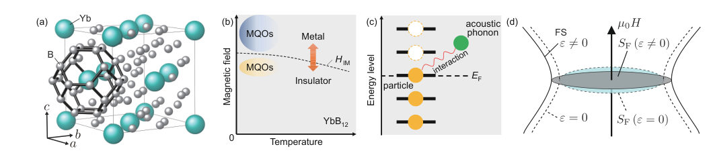
Summary. This study uses ultrasonic measurements to search for magnetoacoustic quantum oscillations in the Kondo insulator YbB12. While oscillations were clearly seen in the field-induced metallic state, they were absent in the insulating state, providing critical constraints on the nature of potential neutral quasiparticles in this system.
Why it may be interesting. not directly relevant
Main problem. Investigating the origin of magnetic quantum oscillations in the insulating phase of the Kondo insulator YbB12 and determining if they arise from neutral quasiparticles or other exotic mechanisms.
Main result. Magnetoacoustic quantum oscillations were not observed in the insulating state, appearing only in the field-induced metallic phase, though some unexplained anomalies in elastic constants were detected in the insulating phase.
Method. Bulk-sensitive ultrasonic pulse-echo measurements in high magnetic fields (up to 65 T) and low temperatures (down to 485 mK), complemented by magnetoresistance and magnetocaloric effect measurements.
Model / system. The physical system is the Kondo insulator YbB12, characterized by a hybridization between 5d and 4f electrons, featuring an insulating phase at low fields and a field-induced metallic phase above approximately 45 T.
Key observables. Elastic constants (C11 and C44), ultrasonic velocities (v11 and v44), magnetoresistance (MR), and magnetocaloric effect (MCE).
Important parameters / regimes. Magnetic fields up to 65 T, temperatures down to 485 mK, cyclotron mass m* approx 15me, and oscillation frequency approx 700 T.
Assumptions / limitations. The analysis assumes the applicability of the Lifshitz-Kosevich formula to describe oscillatory contributions to the elastic constant.
Figures summary. Figure 1 shows the crystal structure and a phase diagram; Figure 4 illustrates the estimated upper bounds of the deformation potential and interaction strength.
Paper structure. The paper introduces the problem of oscillations in insulators, describes the experimental setup and YbB12 sample, presents results for MR, MCE, and ultrasonic velocities, discusses the absence of oscillations in the insulating phase versus the metallic phase, and concludes with an analysis of the observed elastic anomalies.
A highly exotic phenomenon in solid-state physics is the observation of magnetic quantum oscillations in insulators. For instance, in the Kondo insulator YbB$_{12}$ various groups reported the observation of such oscillations seemingly originating from Fermi surfaces, though this contradicts the concept of an insulator having no charged quasiparticles. In this study, we searched for quantum oscillations in YbB$_{12}$ by using bulk-sensitive ultrasonic experiments in high magnetic fields up to 65 T and down to 485 mK. For that, we utilized an YbB$_{12}$ single crystal that, in previous experiments, revealed oscillations in the magnetoresistance in the insulating state. We confirmed oscillation-like behavior of the magnetoresistance as well as field-dependent oscillations in the magnetocaloric effect. However, we could not observe magnetoacoustic quantum oscillations in the insulating state, only in the field-induced metallic state. In the insulating state, we found some anomalies in our ultrasound data, the origin of which remains elusive. Our findings provide further information on the puzzling behavior of the insulating state of YbB$_{12}$.
Authors: K. Rajaswathi, R. Ravisankar, R. Radha, P. K. Mishra, P. Muruganandam
Type: theory · Category: quantum gases · PDF: https://arxiv.org/pdf/2605.04441v1
Analysis basis: full PDF text, analyzed in chunks
Topic relevance: non-equilibrium dynamics 3/5
Summary. This paper explores how spin-orbit and Rabi couplings modify the stability and dynamics of dark-bright solitons in two-component Bose-Einstein condensates. It reveals that while these couplings break the integrability of the system, they also enable the creation of complex nonlinear phenomena like breathing stripes and soliton fragmentation. The findings highlight the potential for using synthetic gauge fields to precisely control nonlinear structures in ultracold atoms.
Why it may be interesting. It provides deep insights into how synthetic gauge fields and coherent coupling can be used to engineer and control nonlinear excitations and complex pattern formation in multicomponent quantum gases.
Main problem. Investigating the stability and nonlinear dynamics of dark-bright solitons in a binary Bose-Einstein condensate subjected to synthetic spin-orbit and Rabi couplings.
Main result. The study demonstrates that spin-orbit coupling breaks integrability and induces spatial separation and density oscillations, while Rabi coupling promotes phase locking and breather-like excitations; interaction quenches further drive the system into complex regimes like multi-soliton fragmentation and stripe patterns.
Method. Numerical simulations using imaginary-time propagation for ground states, real-time evolution via Split-Step Crank-Nicolson, and Bogoliubov-de Gennes analysis for stability and excitation spectra.
Model / system. A one-dimensional, pseudo-spin-1/2 binary Bose-Einstein condensate described by coupled Gross-Pitaevskii equations featuring spin-orbit coupling (kL), Rabi coupling (Omega), and inter/intraspecies interactions.
Key observables. Component densities, chemical potentials, energy functionals, population imbalance, and Bogoliubov-de Gennes excitation spectra (eigenfrequencies).
Important parameters / regimes. Spin-orbit coupling strength (kL), Rabi coupling strength (Omega), interaction strengths (g_ij), and external harmonic confinement vs. homogeneous (trapless) regimes.
Assumptions / limitations. The system is treated in a quasi-one-dimensional regime with strong transverse confinement; the study focuses on the nonlinear dynamics of the Gross-Pitaevskii framework.
Figures summary. Figures show ground-state density transitions (miscible to immiscible), soliton profiles in harmonic traps, spatiotemporal evolution of densities under increasing coupling strengths, and complex patterns (fragmentation, stripes) following interaction quenches in both trapped and free space.
Paper structure. The paper establishes a theoretical benchmark using the integrable Manakov model, analyzes the impact of spin-orbit and Rabi couplings on soliton stability via BdG analysis, and explores non-equilibrium dynamics through real-time simulations of interaction and coupling quenches.
We investigate the stability and nonlinear dynamics of dark-bright solitons in a one-dimensional binary Bose-Einstein condensate subjected to synthetic spin-orbit and Rabi couplings. In the absence of spin-orbit coupling, we map the coupled Gross-Pitaevskii equations onto the integrable Manakov model and obtain exact dark-bright soliton solutions, providing a rigorous theoretical benchmark. We demonstrate that finite spin-orbit coupling breaks integrability by inducing spin-dependent phase gradients, which result in spatial separation of the spin components and the emergence of intrinsic density oscillations. By contrast, Rabi coupling enforces phase locking between components and supports robust breather-like excitations. Using imaginary-time propagation together with Bogoliubov-de Gennes analysis, we systematically characterise ground-state phases and excitation spectra for both symmetric and asymmetric interaction regimes in homogeneous and harmonically trapped systems. Real-time simulations further demonstrate that finite gauge fields and interaction quenches drive the system far from equilibrium, giving rise to diverse nonlinear phenomena, including multi-soliton fragmentation, breathing stripe patterns, and soliton dynamics. Our results highlight the interplay of synthetic gauge fields, external confinement, and interaction engineering as powerful tools for controlling the stability and dynamical behaviour of nonlinear excitations in multicomponent quantum gases.
Authors: Benedikt Remlein, Massimiliano Esposito
Type: theory · Category: statistical mechanics · PDF: https://arxiv.org/pdf/2605.05194v1
Analysis basis: full PDF text, analyzed in chunks
Topic relevance: driven-dissipative phase transition 2/5 · non-equilibrium dynamics 2/5 · non-equilibrium universality 2/5
Summary. This paper demonstrates that supercritical Hopf bifurcations act as a universal mechanism for generating nonanalytic behavior in time-averaged observables. It reveals that while the underlying stationary state remains smooth, the emergence of a limit cycle creates a 'kink' in observables due to the geometric effects of phase averaging.
Why it may be interesting. not directly relevant
Main problem. Investigating the origin of nonanalytic (singular) behavior in time-averaged observables at the onset of supercritical Hopf bifurcations.
Main result. The authors show that time-averaged observables generically exhibit 'kink' singularities (discontinuous derivatives) at Hopf bifurcations due to phase averaging over the emergent limit cycle, even when the stationary state remains smooth.
Method. The study uses center-manifold reduction, normal form theory, and phase averaging to derive an integer-power expansion for excess observables, supplemented by numerical verification in chemical, electronic, and climate models.
Model / system. A general class of driven, nonlinear, dissipative dynamical systems undergoing supercritical Hopf bifurcations, with specific applications to the Brusselator (chemical), CMOS ring oscillators (electronic), and ENSO (climate).
Key observables. Time-averaged observables such as excess semi-grand Gibbs free energy, entropy production rate, chemical work rate, and temperature anomaly variance.
Important parameters / regimes. The bifurcation parameter (distance from criticality), the first Lyapunov coefficient, and the oscillation amplitude.
Assumptions / limitations. The derivation assumes non-degenerate, supercritical Hopf bifurcations and smooth, finite-dimensional dynamical systems.
Figures summary. Figure 1 compares stationary vs. Hopf bifurcations; Figure 2 demonstrates the 'kink' singularity in the Brusselator, the higher-order singularity in CMOS oscillators, and the scaling in large-N CMOS rings.
Paper structure. The paper introduces the problem of singularity at Hopf bifurcations, provides a mathematical derivation of the expansion of observables via phase averaging, presents an Ehrenfest-like hierarchy of singularities, and validates the theory using various physical models.
Hopf bifurcations are a universal route to self-sustained oscillations in driven systems. Despite the absence of any singular stationary state, we show that time-averaged observables generically exhibit singularities at the onset of oscillations. The origin of this behavior is geometric: phase averaging over the emergent periodic attractor eliminates odd powers of the oscillation amplitude, while the squared amplitude varies smoothly with the distance from the bifurcation. Consequently, the excess of any smooth time-averaged observable admits an integer-power expansion; observables remain finite but display discontinuities in finite-order derivatives. This yields an Ehrenfest-like hierarchy of Hopf singularities, in which the first nonanalytic derivative is determined by the lowest-order coupling between the observable and the limit-cycle waveform that survives phase averaging. Generic observables therefore exhibit kink singularities, while symmetry or geometric cancellations can suppress lower-order couplings and shift nonanalyticity to higher derivatives. We demonstrate this mechanism in chemical, electronic, and climate oscillators. Our results identify supercritical Hopf bifurcations as a universal mechanism for nonanalytic observable behavior, where singular features arise without any underlying singular stationary state. They thus provide a generic setting for singular behavior without divergence.
Authors: Oliver Janssen, Matthew Kleban, Cameron Norton
Type: theory · Category: other · PDF: https://arxiv.org/pdf/2605.04139v1
Analysis basis: full PDF text, analyzed in chunks
Topic relevance: Keldysh / 2PI / non-Gaussian methods 2/5 · methods for driven-dissipative 2/5 · non-equilibrium dynamics 2/5
Summary. This paper provides an analytical framework to calculate how oscillating quantum states tunnel through a barrier. It reveals that instead of a smooth decay, coherent states undergo tunneling in periodic, intense bursts of probability current. This work bridges the gap between stationary decay models and the dynamic tunneling seen in systems like Josephson junctions or cosmological bubble nucleation.
Why it may be interesting. This is highly relevant for researchers in open quantum systems and quantum optics, as it provides an analytical tool to understand how phase coherence and initial state dynamics drive non-exponential, time-dependent decay in metastable systems.
Main problem. Determining the time-dependent decay rate and tunneling probability of general, non-stationary initial states (specifically coherent/oscillating states) out of a metastable potential well.
Main result. The authors derive a closed-form expression for the probability current that captures interference effects and show that tunneling for coherent states occurs in narrow, periodic spikes when the wave packet reaches the classical turning point.
Method. The study uses a resonant state expansion (Gamow-Siegert states) combined with semiclassical WKB approximations and the saddle-point method, validated against numerical solutions of the Schrödinger equation using a complex absorbing potential.
Model / system. A quantum mechanical particle in a metastable potential well (such as a superconducting Josephson junction or a cosmological scalar field) separated from a free region by a potential barrier.
Key observables. Probability current (tunneling rate), time-dependent decay rate, and total leaked probability.
Important parameters / regimes. Semiclassical limit (large action), narrow-resonance regime, oscillation period, and the amplitude of the coherent state.
Assumptions / limitations. The initial state is localized in the well; the expansion neglects the non-resonant continuum; the potential is approximated quadratically near the well bottom; and the results are valid for energies well below the barrier top.
Figures summary. Figure 1 shows the potential geometry and turning points; Figure 2 displays resonant states; Figure 3 compares different boundary conditions; Figure 4 and 5 demonstrate the accuracy of the proposed formula and the Gaussian shape of tunneling spikes.
Paper structure. The paper begins by defining the problem of non-vacuum decay, introduces the resonant state expansion and WKB framework, applies this to coherent states to derive periodic tunneling spikes, validates the analytical results with numerical simulations, and discusses the limits of the approximation.
We study the decay of general initial states out of a metastable potential well in quantum mechanics. We provide a closed-form expression for the probability current that tunnels through the barrier in terms of the resonant states into which the initial state can be decomposed. All ingredients in the equation are computed analytically to first subleading order in the semiclassical limit. Specializing to a coherently-oscillating initial state, we derive an approximation to the time-dependent decay rate and demonstrate its accuracy by comparing it to a numerical solution of the Schrödinger equation.
Authors: Minhyeok Kang, Taejin Kim, Jungsoo Hong, Joonsuk Huh
Type: theory · Category: quantum information and computing · PDF: https://arxiv.org/pdf/2605.04654v1
Analysis basis: full PDF text, analyzed in chunks
Topic relevance: correlated / nonlocal dissipation 2/5 · methods for driven-dissipative 2/5
Summary. This paper proposes an efficient way to implement multi-controlled gates in trapped-ion systems by exploiting the sign freedom in red-sideband pulses. By canceling redundant pulses, the authors significantly reduce gate time and error accumulation, specifically improving the scalability of the Linear Combination of Unitaries (LCU) method.
Why it may be interesting. This work is highly relevant for researchers in open quantum systems and quantum optics as it demonstrates how hardware-native pulse engineering can directly mitigate decoherence channels like motional heating and dephasing in trapped-ion processors.
Main problem. Implementing multi-controlled gates in trapped-ion systems is resource-intensive due to high gate depth and susceptibility to noise like motional heating and dephasing.
Main result. The authors developed a pulse-level implementation that exploits RSB gauge freedom to cancel redundant pulses, reducing gate time by ~40% and improving fidelity, while also reducing LCU select operator complexity from O(L log L) to O(L).
Method. The study uses pulse-level engineering of Red-Sideband (RSB) pulses in the Cirac-Zoller scheme, applying numerical simulations via the Lindblad master equation and QuTiP to evaluate performance under realistic noise.
Model / system. The system is a trapped-ion platform (specifically modeled after 171Yb+) where qubits are encoded in hyperfine clock states and entanglement is mediated via collective vibrational modes using RSB pulses.
Key observables. State fidelity of computational basis output states, gate execution time, and RSB pulse count scaling.
Important parameters / regimes. Rabi frequency Omega/2pi = 0.2 MHz, Lamb-Dicke parameter eta = 0.1, motional heating, and motional dephating rates.
Assumptions / limitations. The pulse cancellation scaling derivation assumes L = 2^N (full binary control space); the model assumes a single shared motional mode and a truncated Fock space (n_max = 10).
Figures summary. Figure 1 shows the energy level structure; Figure 2 illustrates RSB gauge freedom; Figure 3 shows the ancilla-free circuit; Figure 4 demonstrates N-CSWAP pulse cancellation; Figures 7-11 detail LCU implementation and pulse count scaling; Figure 12 compares state fidelities across different iterations.
Paper structure. The paper introduces the problem of multi-controlled gate overhead, presents the discovery of RSB gauge freedom, details the pulse cancellation and ancilla-free construction methods, applies these to the LCU method, provides numerical validation under noise, and concludes with scaling analysis.
Multi-controlled gates are essential primitives in quantum algorithms, yet implementing them via standard gate-level decompositions remains resource-intensive. We develop efficient pulse-level implementations of multi-controlled gates in trapped-ion systems using the Cirac-Zoller scheme. We first show that the Cirac-Zoller construction admits a freedom in the sign choice of red-sideband (RSB) pulses, which leaves the logical operation invariant up to a local Pauli-$Z$ correction. By exploiting this freedom, we construct equivalent realizations of multi-controlled gates and develop pulse cancellation for more efficient implementations of successive gates. We perform numerical simulations and show that pulse cancellation reduces the gate time and improves the state fidelity. Furthermore, we propose ancilla-free circuits for general $N$-controlled gates that use a single-controlled gate primitive and $\mathcal{O}(N)$ RSB pulses. As a key application, we apply our pulse cancellation to the linear combination of unitaries (LCU) method for block encoding. We show that the RSB-pulse cost of the select operator over $L$ unitaries can be reduced from $\mathcal{O}(L\log L)$ to $\mathcal{O}(L)$, which improves the efficiency and scalability of LCU-based quantum circuits.
Authors: Santiago Llorens, Arnau Diebra, Michal Sedlák, Ramon Muñoz-Tapia
Type: theory · Category: quantum information and computing · PDF: https://arxiv.org/pdf/2605.04981v1
Analysis basis: full PDF text, analyzed in chunks
Topic relevance: entanglement & information structure 2/5 · quantum measurements 2/5
Summary. This paper provides a mathematical framework for detecting unknown faults in a chain of quantum devices. It proves that for qubits, the ability to identify faulty components depends only on how many are broken, not how many healthy ones are in the chain, and provides an exact formula for the success probability.
Why it may be interesting. not directly relevant
Main problem. The exact identification of faulty quantum devices within a series of n channels, where a subset of k devices applies an unknown, Haar-random unitary transformation.
Main result. The authors derive optimal success probabilities for zero-error anomaly detection, finding that for qubits, the success probability depends only on the number of anomalies k and is independent of the total number of devices n.
Method. The problem is framed using quantum testers and the Choi-Jamiołkowski isomorphism, solved via Semidefinite Programming (SDP) and advanced representation theory including mixed Schur-Weyl duality and the Walled Brauer Algebra.
Model / system. A sequence of n quantum channels, each acting on a d-dimensional Hilbert space, where k devices are anomalous and apply an unknown unitary W, while the others apply a known unitary V.
Key observables. Success probability (Ps) of the zero-error identification protocol.
Important parameters / regimes. Number of total devices (n), number of anomalous devices (k), and local dimension of the systems (d).
Assumptions / limitations. The unknown unitary is assumed to be Haar-random (complete ignorance); the number of anomalies k is known; and the error is purely unitary and agnostic.
Figures summary. Figure 1 shows the problem setup; Figure 2 illustrates the optimal parallel protocol using entangled states; Figure 3 displays Young diagrams for irreducible representations; Figure 4 and 5 demonstrate the Walled Brauer Algebra diagrammatic calculus.
Paper structure. The paper introduces the anomaly detection problem, analyzes the single-anomaly case, extends to the two-anomaly case for qubits, provides a general analytical expression for arbitrary k and d using representation theory, and concludes with an algebraic framework in the appendix.
The accurate identification of faulty hardware is a fundamental requirement for reliable quantum information processing. We address this problem in a quantum setting, where a series of $n$ devices is intended to apply the same unitary operation, but $k$ malfunctioning devices among them apply a different, unknown unitary action. Under the assumption of complete ignorance regarding the specific unitary transformation applied, we model our hypotheses using representation-theoretic tools and study the zero-error protocol for identifying these faulty devices. We derive the optimal success probability for the single- and two-anomaly scenarios, demonstrating that it is independent of the total number of devices in the series. Furthermore, we present a simple protocol that makes use of ancillary systems that achieves this optimal limit. Notably, this protocol offers significant operational advantages, such as allowing us to test each device independently. Finally, we extend our analysis to the general scenario in which both the number of anomalies and the local dimension of the systems are arbitrary, evaluating our protocol's performance and conjecturing its global optimality in the general case.
Authors: Luke Levine, Jessy Jacob Mesapam, Benjamin Mustico, Christino Tamon, Gabriel Tucker, Hanmeng Zhan
Type: theory · Category: quantum information and computing · PDF: https://arxiv.org/pdf/2605.04414v1
Analysis basis: full PDF text, analyzed in chunks
Topic relevance: non-equilibrium dynamics 2/5 · quantum measurements 2/5
Summary. This paper demonstrates that by using oriented (chiral) graphs, one can achieve uniform mixing in quantum walks where it was previously thought impossible. It provides new mathematical tools to reduce global mixing analysis to local measurements and identifies specific families of graphs that violate classical 'no-go' theorems.
Why it may be interesting. This is interesting for researchers in quantum information and open quantum systems because it provides new methods for controlling state distributions and explores how broken symmetry (chirality) can be used to achieve mixing properties impossible in symmetric systems.
Main problem. The paper investigates the conditions for uniform mixing and average uniform mixing in continuous-time quantum walks, specifically looking to overcome existing 'no-go' theorems by using chiral (oriented) graphs.
Main result. The authors prove that signed complete graphs can achieve probabilistic uniform mixing and that certain oriented circulants exhibit average uniform mixing, violating Godsil's no-go theorem.
Method. The study employs unitary signings, complex equitable partitions, and a stopping rule based on weak measurements to reduce global mixing problems to local ones.
Model / system. The model consists of continuous-time quantum walks on graphs (including complete, Hamming, and circulant graphs) where the Hamiltonian is defined by the adjacency matrix, potentially with complex edge weights (chiral/oriented graphs).
Key observables. Uniform mixing, average uniform mixing (Cesaro limit of the mixing matrix), and mixing time.
Important parameters / regimes. Unitary signing (sigma), vertex multiplicity, and the time (t) at which the distribution becomes uniform.
Assumptions / limitations. The study assumes the use of complex edge weights (unitary signing) to bypass restrictions present in standard undirected graphs; it also notes a limitation regarding non-abelian groups due to irreducible representation degrees.
Figures summary. Figure 1 is a comparison table of quantum uniform mixing, and Figure 5 shows small examples of circulant graphs exhibiting average uniform mixing.
Paper structure. The paper introduces the problem of uniform mixing, presents a reduction technique via a stopping rule, analyzes specific graph families (complete, Hamming, and circulant graphs), and concludes with a no-go theorem for non-abelian Cayley graphs.
This paper studies uniform mixing in continuous-time quantum walks. We show that for some unitary signing $σ$ the complete graph $K^σ_n$ has probabilistic uniform mixing. In contrast, it is known {\em no} complete graph has uniform mixing except for $K_2$, $K_3$, and $K_4$. Our technique is based on a stopping rule for quantum walks which reduces global to local uniform mixing. As a special case, we found an orientation of $H(n,4)$ that mixes to uniform faster than any other Hamming graphs. We also show that there are infinite families of oriented circulants with {\em average} uniform mixing. This is a chiral violation of Godsil's {\em No-Go} theorem which states that no graph has average uniform mixing except for $K_2$.
Authors: Rishikesh Gajjala, Saurabh Ray, Dimitrios M. Thilikos
Type: theory · Category: quantum information and computing · PDF: https://arxiv.org/pdf/2605.04855v1
Analysis basis: full PDF text, analyzed in chunks
Topic relevance: Dicke superradiance 2/5 · entanglement & information structure 2/5
Summary. The paper provides a complete structural and algorithmic characterization of graphs that can realize multipartite W-states in photonic experiments. It introduces a polynomial-time recognition algorithm and proves that generalizing these structural properties to Dicke states is computationally hard (coNP-complete).
Why it may be interesting. This work is highly relevant for quantum optics and photonic quantum computing as it provides the fundamental combinatorial rules for designing experimental setups that generate specific multipartite entangled states like W-states and Dicke states.
Main problem. The paper aims to provide a complete structural characterization and recognition algorithm for W-state graphs, which are edge-colored graphs representing quantum photonic experiments that generate multipartite W-states.
Main result. The authors prove that W-state graphs can be decomposed into 3-connected building blocks called W-cones and provide an efficient O(|V|*|E|) recognition algorithm. They also prove that verifying the corresponding condition for Dicke states is coNP-complete.
Method. The study uses classical matching theory, specifically the decomposition of matching-covered graphs into 3-connected components (using SPQR-trees) and the properties of factor-critical graphs.
Model / system. The model is an experiment-graph framework for quantum photonics, where vertices represent optical modes, edges represent photon-pair sources (crystals), and half-edge colors represent the state of the photon in a specific arm.
Key observables. Coincidence events (existence of perfect matchings) and vertex coloring (representing excited vs. ground states).
Important parameters / regimes. The Hamming weight k for Dicke state generalizations and the number of vertices n for W-states.
Assumptions / limitations. The study abstracts away physical amplitudes and phases to focus on the purely combinatorial properties of the graph.
Figures summary. Figure 1 shows examples of W-cones; Figure 2 and 3 illustrate the 2-vertex cut decomposition of a W-state graph into W-blocks; Figure 4 demonstrates the W-union operation; Figure 5 shows a construction for the complexity reduction proof.
Paper structure. The paper begins with definitions of W-state graphs and W-cones, provides a structural characterization via 3-connected decomposition, develops recognition and W-colorability algorithms using dynamic programming on SPQR-trees, and concludes with a complexity analysis of Dicke state generalizations.
We study the class of edge-coloured graphs arising from the graph-theoretic representation of quantum photonic experiments that generate multipartite W-states. Abstracting away physical amplitudes and phases, we introduce W-state graphs: matching-covered graphs equipped with a half-edge 2-colouring such that every perfect matching contains exactly one bichromatic edge and every vertex is incident with a red half-edge. Our main contribution is a complete structural characterization of W-state graphs. We show that a graph is a W-state graph if and only if each of its 3-connected components is a W-cone, a simple and rigid building block defined by a universal vertex and a factor-critical base. This characterization implies that no W-state graph is simple and yields a recognition algorithm running as fast as verifying whether a graph is matching-covered. We also show that the natural generalization to Dicke states encounters a complexity barrier: verifying one of the two Dicke state conditions is itself coNP-complete, resolving an open problem of Vardi and Zhang [IJCAI 2023]. Our results place W-state graphs firmly within classical matching theory and precisely delineate the combinatorial structures capable of realizing idealized W-states in the experiment-graph framework.
← Index · ← Previous · Next →